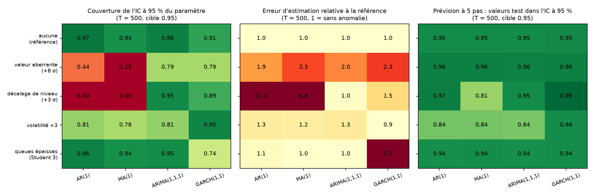

Le sujet demande d'étudier, par simulation, le comportement des modèles de séries temporelles quand on fait varier la taille des données et la volatilité, afin de mieux comprendre les résultats fournis par les logiciels sur données réelles. Nous procédons en trois temps, sur six modèles (AR(1), AR(2), MA(1), ARIMA(1,1,1), ARCH(1), GARCH(1,1)). (1) Sans anomalie, nous déterminons le nombre minimal d'observations (1000 répétitions) : de 50 pour un AR(1) à 2000 pour l'estimation de $\alpha$ dans un GARCH(1,1). (2) Avec anomalie, nous injectons dans la série une valeur aberrante, un décalage de niveau, un changement de volatilité ou des queues épaisses, et nous mesurons ce que cela coûte à l'estimation et à la prévision (500 répétitions). (3) Sur le Brent (FRED, 2010-2026), qui traverse trois épisodes d'anomalie réels (2015-2016, 2020, 2026), nous éprouvons ces résultats en prévision glissante, avec GARCH et le modèle de fondation TimesFM 3.0 de Google.
Résultats. Chaque anomalie casse un modèle précis et en épargne d'autres. Un décalage de niveau de +3 écarts-types biaise $\hat\phi$ de +0,41 dans un AR(1) (couverture de l'IC à 0 %) mais est sans effet sur un ARIMA(1,1,1) ; une valeur aberrante multiplie l'erreur d'estimation par 1,6 à 1,9 et ne se résorbe pas avec $T$ ; un changement de volatilité laisse les paramètres presque intacts mais l'intervalle de prévision ne couvre que 85 % au lieu de 95 % pour les modèles à variance constante ; des queues épaisses n'affectent pas les modèles de moyenne mais dégradent par cinq l'estimation de $\alpha$ dans un GARCH. Sur le Brent, les 5 plus gros jours de 2020 gonflent l'écart-type d'une fenêtre de 43 %, et la variance constante échoue à chaque épisode (couverture de 0,68 en 2026) alors que GARCH et TimesFM suivent le régime.
Les séries temporelles sont un outil standard en économétrie, en finance et en mathématiques appliquées. Le sujet du hackathon propose d'en prendre du recul en simulant des séries dont on connaît le modèle, afin d'observer comment l'estimation et la prévision se comportent quand on fait varier la taille de l'échantillon, les paramètres ou la volatilité.
La consigne précise qu'on doit choisir « un paramètre pour lequel le modèle se comporte bien et un cas limite où il se comporte moins bien ». Nous prolongeons cette idée d'un pas : plutôt que de seulement approcher une frontière de paramètres, nous provoquons des anomalies, c'est-à-dire des événements dont on connaît la nature, la taille et la date. C'est ce qui se passe dans les données réelles lors d'une crise, d'un changement de régime ou d'une erreur de saisie, et c'est là que les logiciels sont utilisés sans que leurs résultats soient remis en question.
Que deviennent l'estimation et la prévision d'un modèle de séries temporelles quand une anomalie survient, et de quelle taille d'échantillon a-t-on besoin sans anomalie ?
simts, dépôt GitHub) et des recommandations pratiques (section 7).Parmi les indicateurs, nous suivons la couverture de l'intervalle de confiance à 95 % : la fréquence réelle avec laquelle la vraie valeur y tombe. Le 95 % est une convention du logiciel (la valeur 1,96 de la loi normale), pas un résultat. Nous le prenons comme niveau annoncé et nous mesurons s'il est tenu ; ce n'est pas la thèse du rapport, mais un indicateur qui montre quand le logiciel affiche une précision qu'il n'a plus.
Soit $(\varepsilon_t)$ un bruit blanc d'écart-type $\sigma$. Les six modèles étudiés sont :
| Modèle | Équation | Condition |
|---|---|---|
| AR(1) | Xt = φ Xt−1 + εt | |φ| < 1 |
| AR(2) | Xt = φ1 Xt−1 + φ2 Xt−2 + εt | racines hors du cercle unité |
| MA(1) | Xt = εt + θ εt−1 | |θ| < 1 (inversibilité) |
| ARIMA(1,1,1) | ΔXt = φ ΔXt−1 + εt + θ εt−1 | |φ|, |θ| < 1 |
| ARCH(1) | rt = σt zt, σt² = ω + α rt−1² | ω > 0, 0 ≤ α < 1 |
| GARCH(1,1) | σt² = ω + α rt−1² + β σt−1² | α + β < 1 |
L'estimation est faite par maximum de vraisemblance gaussienne (statsmodels pour les modèles ARIMA, arch pour ARCH/GARCH).
L'estimation est faite par maximum de vraisemblance gaussienne (statsmodels pour les modèles ARIMA, arch pour ARCH/GARCH).
| Anomalie | Définition | Situation réelle évoquée |
|---|---|---|
| Valeur aberrante | une valeur isolée augmentée de +8 σ | erreur de saisie, jour exceptionnel |
| Décalage de niveau | +3 σ à partir du milieu, durable | rupture de régime, changement de définition |
| Changement de volatilité | innovations ×3 à partir du milieu | crise, début de régime agité |
| Queues épaisses | innovations de Student à 3 degrés de liberté | rendements financiers |
Les tailles (8 σ, 3 σ, ×3, Student 3) sont des choix de notre part, pour provoquer un effet net ; nous n'affirmons pas qu'elles représentent des valeurs « typiques ».
Chaque série est simulée par sa récurrence avec une période de chauffe de 200 points, une graine fixée et des innovations gaussiennes. Pour chaque modèle, un paramètre « sage » et un cas « limite » proche de la frontière de stationnarité ou d'inversibilité, comme le demande la consigne.
| Modèle | Cas sage | Cas limite |
|---|---|---|
| AR(1) | φ = 0,5 | φ = 0,98 |
| AR(2) | φ = (0,5 ; 0,2) | φ = (0,7 ; 0,28) |
| MA(1) | θ = 0,5 | θ = 0,98 |
| ARIMA(1,1,1) | φ = 0,5 ; θ = 0,3 | φ = 0,9 ; θ = −0,85 |
| ARCH(1) | ω = 0,2 ; α = 0,4 | ω = 0,2 ; α = 0,95 |
| GARCH(1,1) | ω = 0,1 ; α = 0,1 ; β = 0,8 | ω = 0,02 ; α = 0,08 ; β = 0,91 |
Pour chaque tirage de taille $T$, on estime sur les $T-5$ premières valeurs, on vérifie l'ACF et la PACF, on teste les résidus (Ljung-Box, y compris sur les carrés) et on prévoit les 5 valeurs suivantes, comparées aux valeurs mises de côté.
1000 répétitions pour $T \in \{20, 30, 50, 75, 100, 150, 200, 300, 500, 750, 1000, 2000\}$, graines communes entre les $T$.
Quatre modèles au cas sage (AR(1) $\phi=0{,}5$ ; MA(1) $\theta=0{,}5$ ; ARIMA(1,1,1) $\phi=0{,}5$, $\theta=0{,}3$ ; GARCH(1,1) $\omega=0{,}1$, $\alpha=0{,}1$, $\beta=0{,}8$), chacune des quatre anomalies et une référence sans anomalie, 500 répétitions pour $T \in \{100, 250, 500, 1000\}$. L'anomalie commence au milieu de la série. La valeur aberrante est isolée et reste dans l'échantillon d'apprentissage ; le décalage de niveau et le changement de volatilité durent jusqu'à la fin de la série, y compris les 5 valeurs test, et les queues épaisses concernent toute la série. L'incertitude de simulation sur une couverture est ici d'environ ±0,02.
Les prix quotidiens du Brent (DCOILBRENTEU) et du WTI (DCOILWTICO) viennent de FRED, du 4 janvier 2010 au 6 octobre 2026 (4108 jours communs). La prévision glissante utilise une fenêtre de 1000 jours, une ré-estimation tous les 5 jours depuis janvier 2014, et prévoit les rendements logarithmiques à 1 à 5 jours (647 origines, 3235 prévisions par modèle). Modèles : AR(1) à variance constante, ARIMA(1,1,1) sur le log-prix, GARCH(1,1) gaussien et GARCH(1,1) de Student.
TimesFM 3.0 (Google Research, août 2026, 330 millions de paramètres) est un modèle de fondation préentraîné pour la prévision. Nous l'utilisons en zéro-shot (mêmes contextes et mêmes cibles, sans entraînement). Il ne sort que les déciles 0,1 à 0,9 : la comparaison se fait donc à 80 % ([q0,1 ; q0,9]).
Score d'intervalle à 80 % (Gneiting et Raftery, 2007), test de Diebold-Mariano (1995) avec variance de Newey-West à 5 retards, test de Kupiec (1995) pour la couverture.
La consigne demande, pour un tirage, l'estimation, l'ACF/PACF et la prévision à 5 pas. Le Tableau 2 montre ce que donne un tirage (graine 42).
| Modèle, cas | T = 50 | T = 1000 | Vrais paramètres |
|---|---|---|---|
| AR(1), sage : $\hat\phi$ | 0,595 | 0,557 | 0,5 |
| AR(1), limite : $\hat\phi$ | 0,941 | 0,970 | 0,98 |
| ARIMA, limite : $(\hat\phi,\hat\theta)$ | (0,32 ; −0,08) | (0,56 ; −0,44) | (0,9 ; −0,85) |
| GARCH, sage : $(\hat\alpha,\hat\beta)$ | (0,00 ; 1,00) | (0,145 ; 0,638) | (0,1 ; 0,8) |
Trois enseignements. D'abord, même à $T=1000$, $\hat\phi=0{,}557$ s'écarte de 0,5 de plus de deux erreurs standard : c'est le comportement normal d'un estimateur, et c'est pourquoi on répète. Ensuite, pour ARIMA limite, $T=1000$ donne $(\hat\phi,\hat\theta)=(0{,}56 ; -0{,}44)$ au lieu de $(0{,}9 ; -0{,}85)$ alors que le test de Ljung-Box sur les résidus affiche $p=0{,}96$ : le diagnostic « rassure » sur un modèle aux paramètres faux. Enfin, pour GARCH sage à $T=50$, l'optimiseur renvoie une solution au bord, $\hat\alpha=0$, $\hat\beta=1$.
| Modèle | Paramètre | Sage, 25 % | Sage, 10 % | Limite, 25 % | Limite, 10 % |
|---|---|---|---|---|---|
| AR(1) | φ | 50 | 300 | 20 | 30 |
| AR(2) | φ₁ ; φ₂ | 75 ; 500 | 500 ; jamais | 50 ; 300 | 300 ; 2000 |
| MA(1) | θ | 75 | 500 | 20 | 50 |
| ARIMA(1,1,1) | φ ; θ | 150 ; 500 | 750 ; jamais | 2000 ; 2000 | jamais ; jamais |
| ARCH(1) | α | 500 | jamais | 100 | 500 |
| GARCH(1,1) | α ; β | 2000 ; 500 | jamais ; 2000 | 1000 ; 200 | jamais ; 500 |
Règle pratique : quelques dizaines de points suffisent pour un AR(1) ou un MA(1), quelques centaines pour AR(2), ARIMA et ARCH, et au moins un millier pour que $\alpha$ d'un GARCH soit estimé à 25 % près. L'ARIMA(1,1,1) limite ($\phi=0{,}9$, $\theta=-0{,}85$) est le pire cas : les racines AR et MA se compensent presque, les deux paramètres sont mal déterminés et n'atteignent 25 % d'erreur qu'à $T=2000$.
Un cas limite n'est donc pas toujours le plus difficile : l'AR(1) à $\phi=0{,}98$ et le MA(1) à $\theta=0{,}98$ sont estimés plus vite que leurs cas sages (l'estimateur converge plus rapidement près de la frontière), alors que l'ARIMA et le GARCH limites sont les plus lents.

L'erreur d'estimation ne dit pas tout : un paramètre peut être bien estimé alors que l'intervalle annoncé est faux. Le MA(1) limite ($\theta=0{,}98$) est estimé à 25 % près dès $T=20$, mais son IC à 95 % couvre 97 à 99 % jusqu'à $T=500$, puis seulement 88 % à $T=1000$ (effet réel, hors bruit ; nous l'attribuons à la frontière d'inversibilité sans l'avoir démontré). L'ARIMA limite ne couvre que 70 à 79 % jusqu'à $T=500$, et le GARCH sage 63 à 78 % pour $T\le150$. Les modèles AR restent à 94-96 % partout.
Le Tableau 5 et la Figure 3 résument 500 répétitions par cellule. Les valeurs de référence sont celles du même modèle sans anomalie, avec les mêmes graines.

| Anomalie | Modèle | RMSE/réf | Couverture IC | Prévision dans l'IC |
|---|---|---|---|---|
| Valeur aberrante | AR(1) | 1,57 | 0,66 | 0,96 |
| MA(1) | 1,89 | 0,46 | 0,96 | |
| ARIMA(1,1,1) | 1,68 | 0,75 | 0,96 | |
| GARCH(1,1) | 1,83 | 0,88 | 0,96 | |
| Décalage de niveau | AR(1) | 16,29 | 0,00 | 0,97 |
| MA(1) | 10,14 | 0,00 | 0,82 | |
| ARIMA(1,1,1) | 1,01 | 0,96 | 0,96 | |
| GARCH(1,1) | 1,20 | 0,96 | 1,00 | |
| Volatilité ×3 | AR(1) | 1,31 | 0,82 | 0,85 |
| MA(1) | 1,28 | 0,77 | 0,85 | |
| ARIMA(1,1,1) | 1,29 | 0,78 | 0,86 | |
| GARCH(1,1) | 0,88 | 0,94 | 0,94 | |
| Queues épaisses | AR(1) | 1,07 | 0,94 | 0,95 |
| MA(1) | 1,08 | 0,94 | 0,95 | |
| ARIMA(1,1,1) | 0,97 | 0,96 | 0,95 | |
| GARCH(1,1) | 4,95 | 0,80 | 0,95 |
Une seule valeur à +8 σ multiplie l'erreur d'estimation par 1,6 à 1,9 selon le modèle à $T=1000$, et fait tomber la couverture de l'IC à 46-88 %. L'effet ne se résorbe pas avec $T$ (pour l'AR(1), 0,30 à $T=250$ puis 0,66 à $T=1000$, toujours loin de 0,95). La prévision à 5 pas n'est pas touchée : l'outlier est loin des valeurs test. Le coût est surtout un coût de confiance : les paramètres sont moins précis alors que le logiciel affiche la même précision.
C'est l'anomalie la plus destructrice pour les modèles stationnaires : dans un AR(1), $\hat\phi$ est biaisé de +0,41 (l'estimation approche 0,9 : le décalage fait ressembler la série à un processus très persistant) et la couverture de l'IC est de 0 %, à tous les $T$. Le MA(1) est dans le même cas (biais +0,27). L'ARIMA(1,1,1), qui différencie la série, l'absorbe complètement (RMSE ×1,01, couverture 0,96) : le décalage de niveau devient un simple point isolé de la série différenciée. C'est la justification pratique du « d = 1 » face à une rupture.
Quand la volatilité triple à mi-parcours, l'estimation des paramètres de moyenne reste correcte (RMSE ×1,3) mais l'intervalle de prévision des modèles à variance constante ne contient plus que 85-86 % des valeurs test au lieu de 95 %. Le GARCH, qui adapte sa variance, reste à 94 %. L'erreur de prévision elle-même est triplée pour tous (la volatilité est effectivement 3 fois plus grande) : aucun modèle ne la prévoit, la différence est dans l'incertitude annoncée.
Pour les modèles de moyenne, des innovations de Student à 3 degrés de liberté ne changent presque rien (RMSE ×0,97 à ×1,08, couverture 0,94-0,96). Pour le GARCH, l'estimation de $\alpha$ est environ cinq fois moins précise (RMSE ×4,95 à $T=1000$) avec une couverture de 0,80 : des valeurs extrêmes fréquentes sont confondues avec des changements de variance. Le bruit gaussien du maximum de vraisemblance n'est pas robuste à cela.
Le Brent est une série qui traverse trois épisodes d'anomalie réels : le krach de 2014-2016, la crise de 2020 (avec un jour à −64 %) et la période agitée de 2026. Nous l'utilisons pour vérifier que les effets observés en simulation existent dans les données réelles.

| Question | Résultat | Verdict |
|---|---|---|
| Racine unitaire (ADF, log-niveau) | Brent p = 0,063 ; WTI p = 0,032 | ambigu |
| Mémoire des rendements | ACF(1) = −0,064 (Brent), −0,089 (WTI) | quasi vide |
| Effet ARCH (ARCH-LM) | p < 10−98 | écrasant |
| Cointégration Brent/WTI | Engle-Granger p = 0,0007 | plausible |
| Volatilité annualisée | 18 % (2013), 114 % (2020), 71 % (2026) | régimes |
Les rendements du Brent n'ont presque aucune mémoire en moyenne mais une volatilité fortement dépendante du temps : c'est le terrain naturel de GARCH. La kurtosis de Brent seul vaut 95 ; elle tombe à 12,8 quand on retire les 5 plus grands jours, tous entre mars et mai 2020 (le prix passe de 17,36 à 9,12 dollars le 21 avril 2020, soit −64 %). Le WTI est négatif (−37 dollars) le 20 avril 2020, ce qui exclut ce jour du calcul des log-rendements.
| Fenêtre, cas | Écart-type | α | β | α + β | φ AR(1) |
|---|---|---|---|---|---|
| fin 2019, avec | 2,11 | 0,053 | 0,922 | 0,976 | −0,039 |
| fin 2019, sans | 2,01 | 0,042 | 0,936 | 0,978 | −0,047 |
| fin 2020, avec | 3,98 | 0,144 | 0,831 | 0,976 | −0,053 |
| fin 2020, sans | 2,78 | 0,101 | 0,871 | 0,972 | −0,080 |
Cinq jours sur 1000 suffisent à gonfler l'écart-type de la fenêtre de 43 % et $\hat\alpha$ de 43 %, tandis que la persistance $\alpha+\beta$ reste stable (≈ 0,97). C'est l'équivalent réel de la « valeur aberrante » de la section 5.1 : quelques points gouvernent une partie des paramètres, sans que le logiciel le signale.
| Période | n | AR(1) | GARCH gaussien | GARCH Student |
|---|---|---|---|---|
| 2014-2019 | 306 | 0,899 | 0,931 | 0,948 |
| 2020 | 51 | 0,824 | 0,882 | 0,882 |
| 2021-2025 | 253 | 0,996 | 0,964 | 0,968 |
| 2026 | 37 | 0,676 | 0,865 | 0,838 |

La variance constante échoue lors de trois épisodes, 2015-2016, 2020 et 2026, où la couverture glissante tombe à 0,64-0,70. Entre les crises, elle est trop large (≈ 1,00 en 2018 et de 2021 à 2025) : la fenêtre de 1000 jours « se souvient » du dernier choc. GARCH reste dans la zone de bruit sauf au début des crises, où il élargit son IC avec un retard de quelques jours. Le score d'intervalle à 95 % confirme : 38 pour GARCH contre 96 pour AR(1) en 2020, 28 contre 38 en 2026.

La Figure 6 est parlante : en 2019, les deux modèles ont environ 5 % de ratés ; en 2020, 30 sur 255 jours (11,8 %) pour AR(1) contre 18 pour GARCH (7,1 %) ; en 2026, 49 sur 189 (25,9 %) contre 21 (11,1 %). Aucun modèle n'attrape le jour du −64 %.

| AR(1) | GARCH gaussien | GARCH Student | TimesFM 3.0 | |
|---|---|---|---|---|
| Couverture (cible 0,80) | 0,852 | 0,828 | 0,798 | 0,803 |
| Kupiec (p) | < 0,001 | < 0,001 | 0,79 | 0,71 |
| Score d'intervalle | 10,48 | 9,04 | 8,97 | 9,07 |
| Couverture 2026 | 0,614 | 0,772 | 0,741 | 0,778 |
Au test de Diebold-Mariano sur le score d'intervalle, TimesFM est significativement meilleur que la variance constante (écart −1,41 ; $p<0{,}001$) et indiscernable de GARCH (écart +0,11 ; $p=0{,}099$ contre GARCH Student ; +0,03 ; $p=0{,}62$ contre GARCH gaussien). Le résultat tient en ne gardant que l'horizon 1. Sur la prévision ponctuelle, aucun modèle ne bat la prévision nulle (RMSE 3,03 % ; TimesFM 3,10 %) : les rendements du pétrole ne sont pas prévisibles en moyenne.
Ce que cela dit : un modèle préentraîné, sans le moindre ajustement sur ces données, adapte la largeur de son intervalle au régime de volatilité aussi bien qu'un GARCH ajusté à chaque origine. Ce que cela ne dit pas : TimesFM ne fournit pas d'IC à 95 %, donc nous ne pouvons pas juger ses queues, là où l'écart était le plus fort.
| Anomalie | Ce qui casse | Ce qui résiste | Remède |
|---|---|---|---|
| Valeur aberrante | précision et IC de tous les paramètres | prévision à court terme | détecter et traiter (winsorisation, indicatrice) |
| Décalage de niveau | AR, MA : biais fort, IC à 0 % | ARIMA (différenciation), GARCH | différencier ou modéliser la rupture |
| Volatilité ×3 | intervalle de prévision à variance constante | paramètres de moyenne, GARCH | variance dépendante du temps |
| Queues épaisses | estimation de α du GARCH | AR, MA, ARIMA | innovations de Student |
Les remèdes de la dernière colonne sont des pratiques usuelles en économétrie ; nous ne les avons pas testés dans cette étude (sauf la différenciation, section 5.2, et la variance dépendante du temps, sections 5.3 et 6).
Sans anomalie, les modèles de séries temporelles demandent de quelques dizaines à plusieurs milliers d'observations selon le modèle et le paramètre, l'ARIMA aux racines presque compensées et le GARCH étant les plus exigeants. Avec anomalie, le résultat dépend du couple (anomalie, modèle) : un décalage de niveau détruit un AR et laisse un ARIMA intact, une valeur aberrante dégrade tous les paramètres sans se résorber, un changement de volatilité casse l'intervalle de prévision des modèles à variance constante, et des queues épaisses ne gênent que le GARCH. Le Brent, qui connaît trois épisodes de ce type, confirme que ces comportements existent hors du laboratoire, et qu'une variance dépendante du temps, qu'elle vienne d'un GARCH ou d'un modèle de fondation, corrige l'essentiel pour l'incertitude de prévision.
Les extensions naturelles : faire varier l'amplitude des anomalies, tester AR(2) et ARCH(1), ajouter des méthodes robustes (modèles avec indicatrices, innovations de Student) et d'autres séries réelles.
python run_demo.py ar1 limite 1000 | un scénario de simulation, 1000 répétitions |
python analyse_donnees.py | tests préalables sur Brent et WTI |
python rolling_brent.py garch_t | prévision glissante (ar1, arma11, garch_n, garch_t) |
python rolling_timesfm.py | prévision glissante TimesFM 3.0 (poids 1,3 Go) |
python resume_rolling.pypython compare_timesfm.pypython test_dm.py | couvertures, comparaison à 80 %, tests de significativité |
python run_anomalies.py ar1 niveau 500python resume_anomalies.py | anomalies : simulation, puis synthèse et figure |
python figures_rapport.py | figures de synthèse |
Environnement : Python 3.12, numpy, pandas, statsmodels, arch, matplotlib, torch 2.6.0 CPU et timesfm 3.0.2. Le code et les données sont dans le dépôt du projet (simts/, data/, outputs/).
DCOILBRENTEU et DCOILWTICO.